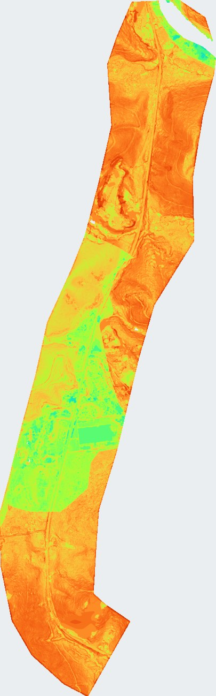
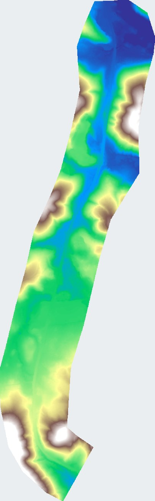
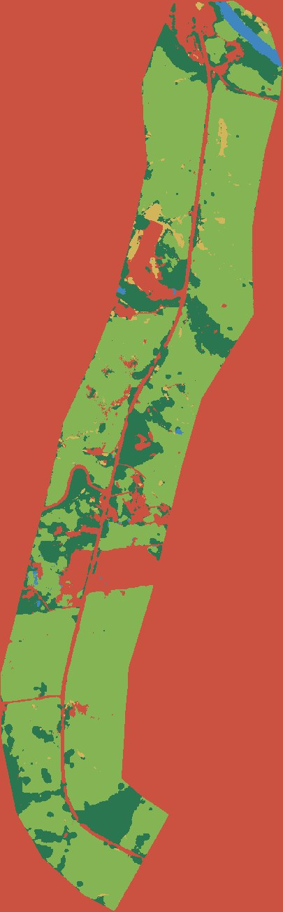
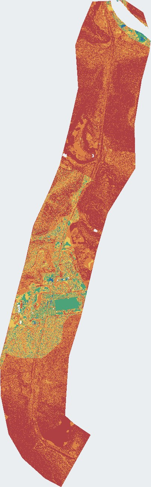

Produto IBGE adaptado em 16 cm
Este relatório documenta a geração do produto IBGE adaptado de alta resolução. A grade estatística nacional de 1 km foi substituída pelo grid do DTM final em 16 cm; os pesos, a escala de notas e as classes finais da metodologia IBGE foram preservados.
Fração válida: 0.426416. Score 1-10: 3.2906 a 8.9420.
| Tema | Peso |
|---|---|
| slope | 0.35 |
| geomorphology | 0.2 |
| geology | 0.15 |
| pedology | 0.15 |
| land_use | 0.1 |
| pluviosity | 0.05 |

Entradas e proxies
DTM: /home/kaue/data/landslide/dtm_final.tif
LULC: /home/kaue/landslide_susc_modelling/IBGE_method/own_LULC/outputs_fullres/lulc_custom_ensemble_16cm.tif
Geologia: /home/kaue/Downloads/05_Geospatial_Data_Maps/sig_cachoeirodoitapemirim_es_suscet/data_interest_area/06.Geologia/Geologia.shp
Pedologia: /home/kaue/Downloads/05_Geospatial_Data_Maps/sig_cachoeirodoitapemirim_es_suscet/data_interest_area/07.Pedologia/Pedologia.shp
Geomorfologia: /home/kaue/Downloads/05_Geospatial_Data_Maps/sig_cachoeirodoitapemirim_es_suscet/data_interest_area/04.PadrõesDeRelevo/Relevo.shp
Pluviosidade: /home/kaue/Downloads/05_Geospatial_Data_Maps/sig_cachoeirodoitapemirim_es_suscet/data_interest_area/08.Isoietas/AtlasPluviometrico/IsoietasAnuaisMedias/pma2

LULC / USOVEG
Fonte: ensemble LULC full-res gerado por deep learning. A classe de água recebe nota 0 e é excluída dos pixels válidos.
| Código LULC | Classe | Nota IBGE |
|---|---|---|
| 1 | Area artificial | 10.0 |
| 2 | Area descoberta | 5.0 |
| 3 | Corpo d'agua | 0.0 |
| 4 | Vegetacao campestre | 2.0 |
| 5 | Vegetacao florestal | 1.0 |
| Valor | Classe | Pixels | Area (m2) | Fração |
|---|---|---|---|---|
| 1 | Area artificial | 6323906 | 161891.99 | 14.06% |
| 2 | Area descoberta | 846639 | 21673.96 | 1.88% |
| 3 | Corpo d'agua | 470202 | 12037.17 | 1.05% |
| 4 | Vegetacao campestre | 29033553 | 743258.96 | 64.56% |
| 5 | Vegetacao florestal | 8298604 | 212444.26 | 18.45% |

Declividade
Fonte: DTM final do drone. A declividade percentual é calculada no grid de 16 cm com halo de 1 pixel nos tiles.
| Declividade (%) - início | Declividade (%) - fim | Nota IBGE |
|---|---|---|
| 0 | 3 | 1 |
| 3 | 8 | 3 |
| 8 | 20 | 5 |
| 20 | 45 | 8 |
| 45 | 75 | 9 |
| 75 | >=75 | 10 |
| Métrica | Valor |
|---|---|
| Mínimo | 1.0000 |
| Máximo | 10.0000 |
| Média | 6.4543 |
| Desvio padrão | 2.4883 |
| Pixels válidos | 44972904 |

Geologia
Proxy adaptado: o campo SIGLA_UNID da camada local de geologia é transformado diretamente em nota GEO.
| SIGLA_UNID | Nota GEO |
|---|---|
| PRps | 7.3 |
| Métrica | Valor |
|---|---|
| Mínimo | 7.3000 |
| Máximo | 7.3000 |
| Média | 7.3000 |
| Desvio padrão | 0.0000 |
| Pixels válidos | 44972904 |
Pedologia
Proxy adaptado: o campo DESC_ da camada local de pedologia é transformado diretamente em nota PED.
| DESC_ | Nota PED |
|---|---|
| PEe1 | 8.0 |
| Rios | 0.0 |
| Métrica | Valor |
|---|---|
| Mínimo | 8.0000 |
| Máximo | 8.0000 |
| Média | 8.0000 |
| Desvio padrão | 0.0000 |
| Pixels válidos | 44420881 |

Geomorfologia
Proxy adaptado: o campo Classe de padrões de relevo substitui os modelados geomorfológicos BDIA.
| Classe | Nota GEM |
|---|---|
| Colinas | 3.0 |
| Morros altos | 9.0 |
| Morros baixos | 7.0 |
| Planícies e terraços fluviais | 1.0 |
| Métrica | Valor |
|---|---|
| Mínimo | 1.0000 |
| Máximo | 9.0000 |
| Média | 6.6379 |
| Desvio padrão | 3.4520 |
| Pixels válidos | 44972904 |

Pluviosidade
Fonte: Atlas Pluviométrico CPRM/SGB PMA. Para a adaptação 16 cm, a nota é interpolada continuamente entre os limiares IBGE para preservar a variação local.
| Precipitação média anual (mm) | Nota PLUV |
|---|---|
| 400-1000 | 4 |
| 1000-1500 | 6 |
| 1500-2000 | 8 |
| 2000-2500 | 9 |
| 2500-4300 | 10 |
| adaptação 16 cm | interpolação contínua entre os limiares acima |
| Métrica | Valor |
|---|---|
| Mínimo | 6.9007 |
| Máximo | 6.9414 |
| Média | 6.9197 |
| Desvio padrão | 0.0108 |
| Pixels válidos | 44972904 |
PMA em mm
| Métrica | Valor |
|---|---|
| Mínimo | 1225.1656 |
| Máximo | 1235.3416 |
| Média | 1229.9253 |
| Desvio padrão | 2.7107 |
| Pixels válidos | 44972904 |
Álgebra IBGE
O score final é calculado por pixel:
S = 0.15*GEO + 0.20*GEM + 0.15*PED + 0.10*USOVEG + 0.35*DECL + 0.05*PLUV
Pixels com água, nodata ou nota temática inválida são excluídos da máscara válida.
| Tema | Peso |
|---|---|
| slope | 0.35 |
| geomorphology | 0.2 |
| geology | 0.15 |
| pedology | 0.15 |
| land_use | 0.1 |
| pluviosity | 0.05 |

Resultados
O score 1-10 é reclassificado em cinco classes: muito baixa, baixa, média, alta e muito alta.
Score 1-10: 3.2906 a 8.9420.
| Valor | Classe | Pixels | Area (m2) | Fração |
|---|---|---|---|---|
| 1 | Muito baixa | 337031 | 8627.99 | 0.76% |
| 2 | Baixa | 2358753 | 60384.08 | 5.34% |
| 3 | Média | 4826588 | 123560.65 | 10.94% |
| 4 | Alta | 14759546 | 377844.38 | 33.44% |
| 5 | Muito alta | 21849115 | 559337.34 | 49.51% |
Máscara válida
| Valor | Classe | Pixels | Area (m2) | Fração |
|---|---|---|---|---|
| 0 | Inválido | 59361873 | 1519663.95 | 57.36% |
| 1 | Válido | 44131033 | 1129754.44 | 42.64% |
webviewer
Visualização interativa do score final 0-10. A imagem está em WGS84 e foi derivada de ibge_susceptibility_score_1to10.tif.